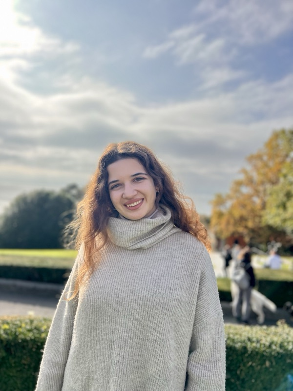

PhD Researcher
Social Computing Group
Idiap Research Institute
EPFL
Nil Yagmur Ilba
I study how news media frame the world, using large language models and participatory AI.

Research
I am a doctoral student in the Social Computing Group at Idiap Research Institute and EPFL, supervised by Prof. Daniel Gatica-Perez. My PhD focuses on news media framing analysis: how stories are told, by whom and with what effect, using LLMs together with participatory AI methods.
Before that, I completed an MSc in Digital Humanities at EPFL, working on language models, knowledge graphs and cultural heritage.
SupervisorProf. Daniel Gatica-Perez
TopicsMedia framing · LLMs · Participatory AI · Computational social science
News
Jul 2026Presented our paper “Living in a Material(istic) World” at the ADHO Digital Humanities Conference (DH2026) in Daejeon, South Korea, and received the Conference Bursary Award for young researchers.
2026Started my PhD in the Social Computing Group at Idiap Research Institute and EPFL, supervised by Prof. Daniel Gatica-Perez.
2026Completed my MSc in Digital Humanities at EPFL.
Nov 2024Paper on ecological metaphors in open-science discourse published in the Anthology of Computers and the Humanities.
Publications
2026
All publications on Google Scholar →
Living in a Material(istic) World: Understanding the Mutual Effect between Popular Music and Materialistic Practices
Digital Humanities 2026 (ADHO), Daejeon, South Korea · with A. Balasubramaniam & D. Belfiore
Conference Bursary Award
2024
Tracing Ecological Metaphors in Discourses on Open Science using LLMs and Knowledge Graphs
Anthology of Computers and the Humanities
2024
Painter Profile Clustering Using NLP Features
Complexity, Future Information Systems and Risk, Angers
ProjectsEarlier work
Experience& education
Contact
ScholarGoogle Scholar
ORCID0009-0001-6901-7105
GitHubgithub.com/nilyagmurilba
LinkedInlinkedin.com/in/nilyagmur